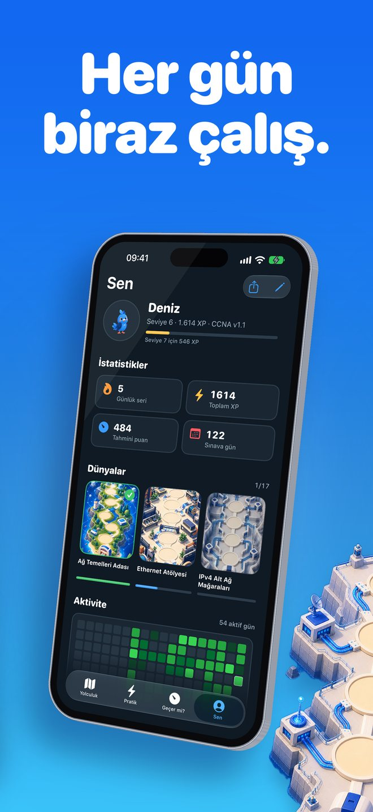
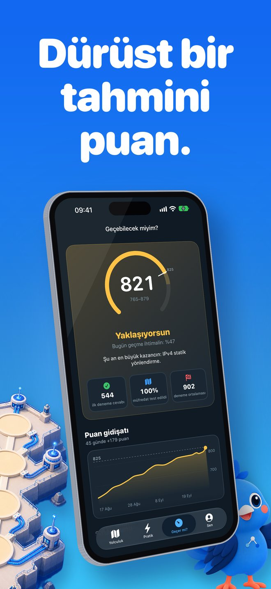

Linkwing nedir?
Bilgisayar ağlarını sıfırdan, oyun oynar gibi öğren. Hazır olduğunda aynı yoldan CCNA 200-301 sınavına devam et.
Ekran görüntüleri


Kimler için
Ağ dünyasına yeni girenler, kariyer değiştirenler, BT öğrencileri ve CCNA adayları. Ön bilgi gerekmez.
Nasıl çalışır
- Seviyeni söyle. Tamamen yeniysen ilk dersten başlarsın; biraz biliyorsan 5 soruluk uyarlanabilir yoklama bildiklerini atlar.
- Çizimli haritada ilerle. Mavi papağan Kavi, durak durak seninle uçar.
- Her gün kısa bir oturum yap. Seri, XP, rozet ve günlük görevler alışkanlık kazandırır.
- Sınava hazır olduğunda alıştırma merkezine geç.
Sıfırdan başla
- 2 başlangıç dünyasında 17 kısa ders: ağ nedir, istemci ve sunucu, switch, router, güvenlik duvarı, LAN/WAN/İnternet, IP ve MAC adresi, kablolar ve fiber, Wi-Fi, VLAN, RAID, NAS, yedekleme
- Sade Türkçe ve günlük hayattan benzetmeler
- Yerel diyagramlar; vurgulanan bir kelimeye dokun, ne demek olduğunu sade dille gör
- Her ders kolay sorularla biter ve her yanlış cevabın nedenini açıklar
Harita ve Kavi
- 15 sınav dünyası: ağ temelleri, Ethernet, IPv4 ve subnetting, IPv6, VLAN ve trunk, spanning tree, yönlendirme (statik, OSPF), servisler (DHCP, DNS, NAT, NTP, SNMP, QoS), güvenlik (ACL, port güvenliği, VPN, AAA), kablosuz, otomasyon ve yapay zeka, sorun giderme ve Sınav Zirvesi
- Kısa, iki dakikalık oturumlarla ilerle
- Günlük hatırlatma isteğe bağlıdır; ana ekran widget'ı günün sorusunu gösterir
Dürüst sınav hazırlığı
- CCNA 200-301 v1.1 ve 3 Şubat 2027'den itibaren v2.0 için çalışma içeriği
- 1.100+ özgün, sınav tarzı soru: exhibit, iki seçenekli, sıralama, eşleştirme ve hesaplama
- 900+ aralıklı tekrarlı bilgi kartı
- 75 uygulamalı IOS komut lab'ı: gerçek komutları yazarsın, kısaltmalar çalışır
- Subnetting Salonu: sonsuz üretilen alıştırmalar
- Sınav dağılımına göre ağırlıklandırılmış süreli deneme sınavları
- Geçecek miyim? sekmesi: 1000 üzerinden tahmini puan, ancak 40 ilk deneme cevabından sonra gösterilir. Erken ve uydurma sayı yok
- Sınav günü tahmini: günlük temponla ne zaman hazır olacağını ve puanının gidişatını gösterir
- Sınav Günü Yolu ile ne kadar yolun kaldığını gör
Dil ve çevrimdışı
- Türkçe dahil 8 dil; uygulama içinden istediğin zaman değiştir
- İnternet olmadan çalışır
- Hesap açmak gerekmez
Başlangıç dersleri sade Türkçe; sınav düzeyindeki derslerin başlık ve özetleri Türkçe, tam metinleri İngilizce. Sınav soruları ve IOS lab'ları İngilizce, çünkü CCNA sınavı İngilizce ve Japonca sunulur.
Linkwing Pro
Linkwing ücretsiz başlar. Linkwing Pro isteğe bağlı, otomatik yenilenen bir aboneliktir; ayrıntılar satın alma ekranında gösterilir ve Apple Hesabı ayarlarından yönetilir veya iptal edilir.
Sık sorulan sorular
Linkwing nedir?
Linkwing, bilgisayar ağlarını sıfırdan öğreten ve Cisco CCNA 200-301 sınavına hazırlayan bir iPhone uygulamasıdır. 2 başlangıç dünyasında 17 kısa ders, mavi bir sultan papağanı olan Kavi'nin rehberlik ettiği 15 sınav dünyalık çizimli bir harita, 1.136 özgün sınav tarzı soru, 929 bilgi kartı, 75 IOS komut lab'ı, Subnetting Salonu ve süreli deneme sınavları içerir. iOS 26 veya üstünü gerektirir ve Ata Tunc Bilge tarafından geliştirilmiştir.
Linkwing ücretsiz mi?
Linkwing'i indirmek ücretsizdir ve ücretsiz başlayabilirsin. Linkwing Pro, tüm kursun kilidini açan isteğe bağlı, otomatik yenilenen bir aboneliktir; Apple Hesabı ayarlarından yönetilir veya iptal edilir.
Sorular gerçek CCNA sınav soruları mı?
Hayır. Linkwing'deki tüm sorular özgündür ve sınav tarzında yazılmıştır; gerçek sınav soruları veya sızdırılmış soru arşivleri (dump) kullanılmaz. Amaç konuyu ezberlemek değil, anlamaktır.
Linkwing CCNA v2.0'ı kapsıyor mu?
Evet. Linkwing, 2 Şubat 2027'ye kadarki sınavlar için CCNA 200-301 v1.1'i ve 3 Şubat 2027'den itibaren v2.0'ı destekler; hangi müfredatın kullanılacağı sınav tarihine göre seçilir. Ayrıntıları Cisco'nun resmi sınav konuları sayfasından doğrula.
Uygulama Türkçe mi, internetsiz çalışır mı?
Uygulama arayüzü Türkçe dahil 8 dilde sunulur ve dil uygulama içinden değiştirilebilir. 17 başlangıç dersi, diyagram açıklamaları ve dokununca açılan 60 terimlik sözlükle birlikte tamamen Türkçedir. Sınav düzeyindeki derslerin başlıkları ve özetleri Türkçe, tam metinleri İngilizcedir. Sınav tarzı sorular ve IOS lab'ları İngilizcedir, çünkü CCNA sınavı İngilizce ve Japonca sunulur. Linkwing internet bağlantısı olmadan çalışır ve hesap gerektirmez.